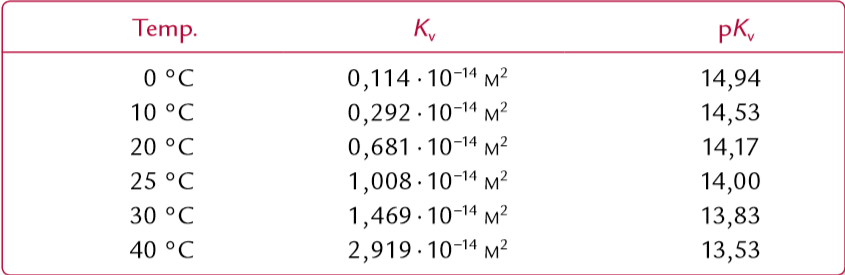

Vands autohydronolyse
Vands ionprodukt (ligevægtskonstant):
K_v = [H3O+]
⋅
[OH-]

Når temperaturen stiger falder pH - se maple.
pH og pOH:
pOH = -log([OH-]/M), hvor M bare fjerner konstanten.
pH = -log([H^+]/M)
pH + pOH = pKv = -log(Kv)